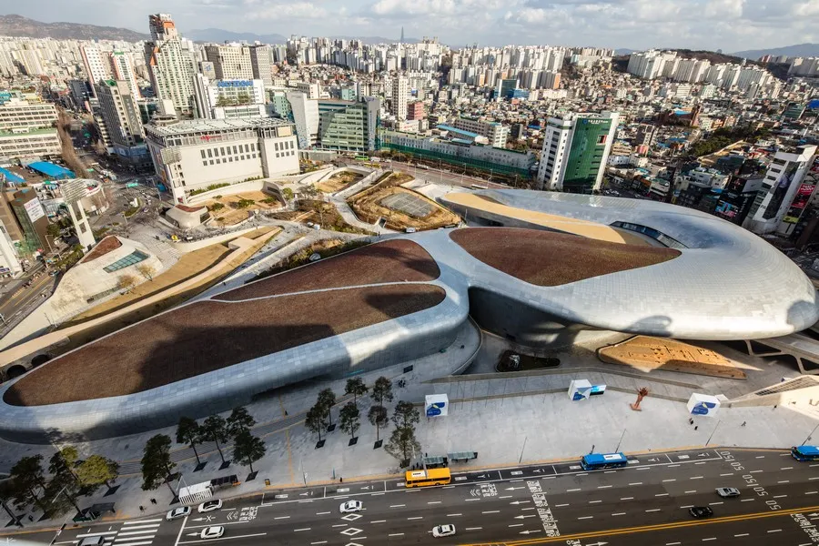

동대문구 DDP
과거 동대문운동장 부지에 조성된 세계 최대 규모의 3차원 비정형 건축물입니다.
건축계의 거장 자하 하디드가 설계하여 곡선과 곡면으로 이루어진 독특한 외관을 자랑하며, 패션쇼, 전시, 신제품 발표회 등이 열리는 서울의 대표적인 복합문화공간입니다.

과거 동대문운동장 부지에 조성된 세계 최대 규모의 3차원 비정형 건축물입니다.
건축계의 거장 자하 하디드가 설계하여 곡선과 곡면으로 이루어진 독특한 외관을 자랑하며, 패션쇼, 전시, 신제품 발표회 등이 열리는 서울의 대표적인 복합문화공간입니다.